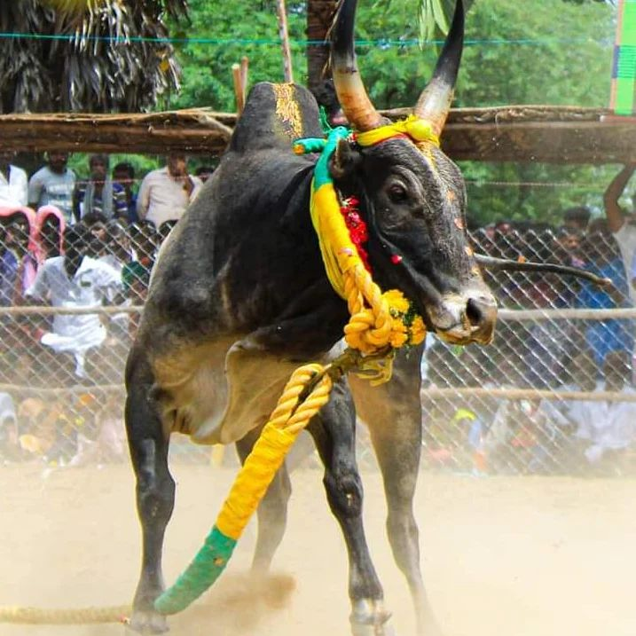

VADAMANJUVIRATTU

History:
An inscription on eru thazhuvuthal at government museum in Tamil Nadu Jallikattu is known to have been practiced during the Tamil classical period (400–100 BCE).[1] It was a cultural ritual among the Ayar tribal people [10][11] who lived in the ‘Mullai’ geographical region of the ancient Tamil Nadu.Later, it became a platform for display of bravery, and prize money was introduced for participation encouragement. A seal from the Indus Valley civilization depicting the practice is preserved in the National Museum
Breeding:
Bos indicus bulls are bred specifically by people of the village for the event. Bulls that are able to participate successfully in the jallikattu event are used as studs for breeding. These bulls also fetch higher prices in the markets.
Jallikattu venues:
Venue
- Alanganallur[17]
- Avaniyapuram
- Palamedu
- Thammampatti
- Vanniyan Viduthy
- Thiruvapur
- Siravayal
- Kandupatti
- Vendanpatti
- Pallavarayanpatty
- Neikarapatti
Preparation
With the introduction of the Regulation of Jallikattu Act, 2009,[22] by the Tamil Nadu legislature, the following activities were done in preparation of the event:
- A written permission is obtained from the respective collector, thirty days prior to conduct of event along with notification of the event location.
- The arena and the way through which the bulls pass through is double-barricaded, in order to avoid injuries to the spectators and by-standers who may be permitted to remain within the barricades.
- The necessary gallery areas are built up alog the double barricades.The necessary permissions are obtained from the collector for the participants and the bulls fifteen days prior.
- Final preparation before the event include a complete testing by the authorities of the Animal Husbandry Department, to ensure that performance enhancement drugs, liquor or other irritants are not used on the bulls.
Animal rights concerns.